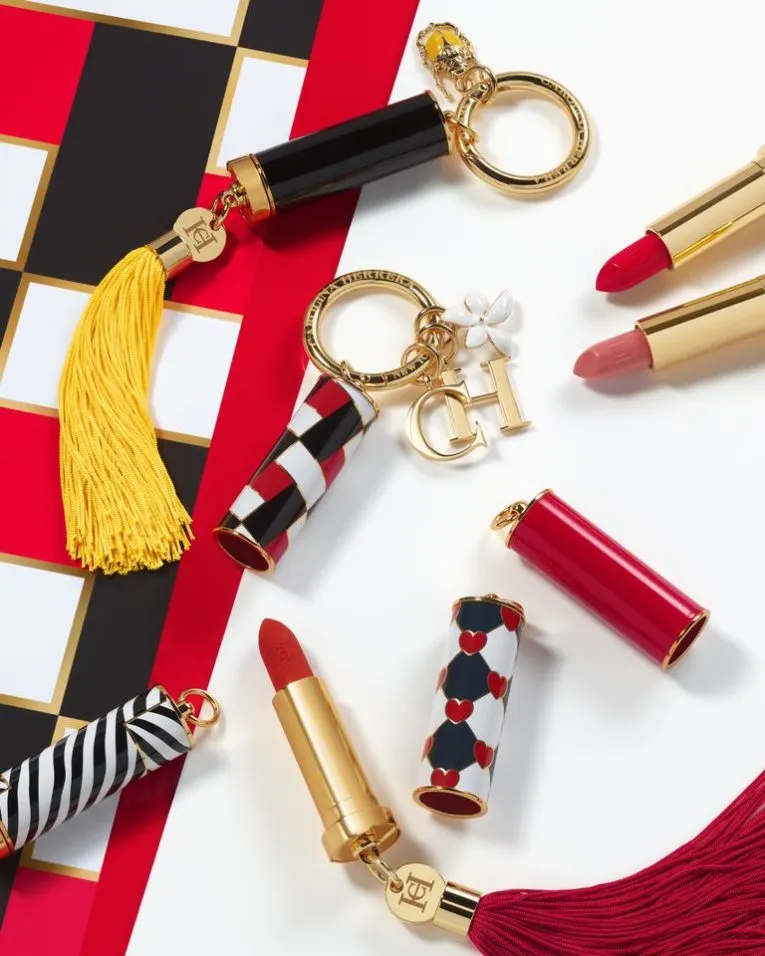
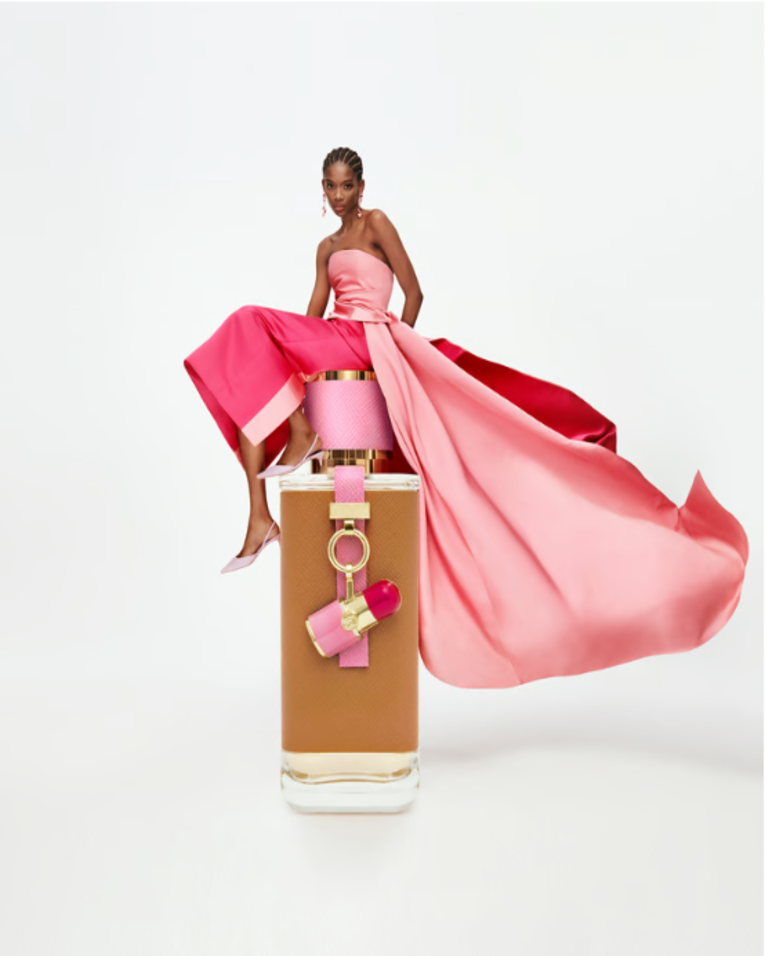

|  |  |
Carolina Herrera es una de las diseñadoras más icónicas del mundo de la moda. Nació en Caracas, Venezuela, el 8 de enero de 1939, y comenzó su carrera en el mundo de la moda a una edad relativamente avanzada. Antes de dedicarse a la moda, Carolina tuvo una carrera en el mundo de la sociedad venezolana y el arte. Sin embargo, su vida dio un giro cuando decidió mudarse a Nueva York en 1980, donde, con el apoyo de su esposo, creó su propia marca de alta costura.
Carolina Herrera fundó su propia firma de moda en 1981. La primera colección que presentó fue un éxito rotundo, destacándose por su elegancia, feminidad y sofisticación. Sus diseños se caracterizaban por líneas limpias, tejidos de alta calidad y un enfoque en la estética clásica, pero moderna. Desde el principio, Herrera ganó la admiración de clientes exclusivas, celebridades y figuras públicas.
A lo largo de los años, la marca Carolina Herrera se expandió a nivel internacional, y no solo se dedicó a la alta costura, sino que también comenzó a producir colecciones prêt-à-porter (ropa lista para llevar) y una serie de accesorios, como zapatos, bolsos y fragancias. La primera fragancia de la marca, simplemente llamada Carolina Herrera, se lanzó en 1988, y con el tiempo se convirtió en una de las más exitosas y queridas por los consumidores.
El estilo de Carolina Herrera es conocido por su elegancia atemporal, con una fuerte influencia de la moda clásica europea, pero con un toque contemporáneo y cosmopolita. Ha vestido a figuras destacadas como Jacqueline Onassis, Michelle Obama, entre otras, y sus colecciones siempre han mantenido un alto nivel de sofisticación. A lo largo de los años, la marca se ha consolidado como sinónimo de lujo, refinamiento y feminidad. El enfoque de Herrera ha sido crear prendas que realcen la belleza de la mujer, con un diseño que va más allá de las tendencias pasajeras.
La marca sigue siendo un referente en la moda internacional, con sus productos disponibles en boutiques exclusivas en todo el mundo. La visión de Carolina Herrera continúa inspirando a nuevas generaciones, manteniendo su reputación como una de las diseñadoras más influyentes en la industria de la moda.